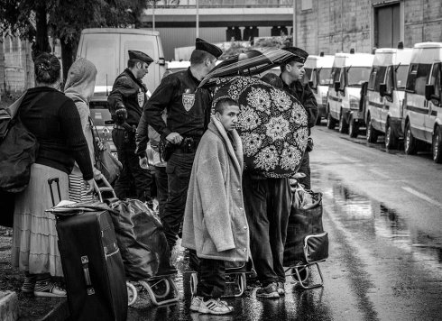

A Lua Platz
Taking Place

Jérémy Gravayat
Freitag 11 okt | 18.30 | Werkstattkino
Eine Gruppe rumänischer Familien sucht am Rand von Paris eine neue Bleibe. Privates Bildmaterial über das vergangene Leben zeigt die gemeinsame Geschichte, die von Vertreibung, aber auch von Solidarität geprägt wurde.
Jérémy Gravayat dreht seit 2000 Filme, die die Lebensbedingungen von Exilgemeinden dokumentieren. Sein Ansatz kombiniert Feld- mit Archivforschung, mündliche Geschichtensammlungen und und soziales Engagement. Er realisierte Projekte in Calais, Palästina und den Vororten von Lyon, Marseille und Paris. Er ist Mitglied des Analogfilmlabors L'Abominable (Paris) und Mitglied von derives.tv. |
| Filme L’Europe après la
pluie 2006 | Vivre ici 2008 | Les Hommes debout 2010 (5. UX)
| A Lua Platz 2019 |